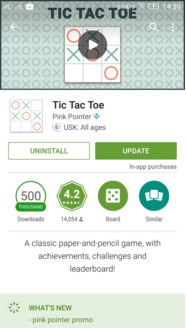

Tic Tac Toe
Game Description
This is a two-player game. The player and the system get alternative chances to mark their move on the 3x3 grid provided. One who marks 3 linearly oriented squares first, wins the game. If none of the players can do this, the game ends to be a draw. The system's move is marked with a circle and the player's with a cross.
Playstore Link: Tic Tac Toe


Difficulty level: Moderate
You can see a demo video of the working of this game at the following link: https://youtu.be/Pf9bY_4C6gE
Overview
The player starts at center point and the system's move is identified using image processing. We are calculating intersecting points for blank, O and X for each one of Nine Cell. The next move is calculated by the MinMax algorithm and is marked in the concerned box using ADB Tool. This continues as the algorithm tries to win the game in the best way possible
Requirements
- Computer with MATLAB, ADB Tool and required drivers set up.
- An Android Device with the 'Tic Tac Toe' game installed on it. (Turn on the Developer options for better visualization)
- USB data transfer cable
Block Diagram

Tutorial
Here's the step-wise tutorial to automate the game.
Step 1: Using ADB Tool to capture screenshot
The following command instantaneously takes the screenshot of the connected device and stores it in the SD card following the specified path.
system('adb shell screencap -p /sdcard/screen.png');
The following command pulls it from the SD card of the android device into the working system following the path specified
system('adb pull /sdcard/screen.png');
The pulled image is stored in the form of a matrix of pixel values by the MATLAB.
Step 2: Image processing
Once the screenshot is obtained, nine different points in the 9 boxes are chosen and processed as blank, O or X. For this game blank cell Red color value is - 255 (RGB) , O's cell R value is - 105 and X's cell R value is - 248.
Depending on this information, we create a matrix 3x3 where 0 represents blank, 1 represents system's move and 2 represents the player's move.
Now, we convert this in the form of a string with 0, 1 and 2's of length 9 and send it to the next step.
Step 3: Algorithm
Minmax is a decision rule used in decision theory, game theory, statistics and philosophy for minimizing the possible loss for a worst case (maximum loss) scenario.
Originally formulated for two-player zero-sum game theory, covering both the cases where players take alternate moves and those where they make simultaneous moves, it has also been extended to more complex games and to general decision-making in the presence of uncertainty.
Matlab calls the python script with command line argument of input string which returns the best move. If game overs it returns 9. The python code can be executed from MATLAB using the following commands.
% inputstr is the string of 0s, 1s and 2s of length 9
[status, result] = system(['python tictac.py ' inputstr]);
The algorithm implemented in Python is shown below.
def maximized_move(self,game):
''' Find maximized move'''
bestscore = None
bestmove = None
for m in game.free_positions():
game.mark(self.marker,m)
if game.is_gameover():
score = self.get_score(game)
else:
move_position,score = self.minimized_move(game)
game.revert_last_move()
if bestscore == None or score > bestscore:
bestscore = score
bestmove = m
return bestmove, bestscore
def minimized_move(self,game):
bestscore = None
bestmove = None
for m in game.free_positions():
game.mark(self.op_mark,m)
if game.is_gameover():
score = self.get_score(game)
else:
move_position,score = self.maximized_move(game)
game.revert_last_move()
if bestscore == None or score < bestscore:
bestscore = score
bestmove = m
return bestmove, bestscore
Step 4: Using ADB Tool to simulate touch
From the result of algorithm tap position is calculated.
The following command taps at the point on the screen with the co-ordinates mentioned as (x, y). This is used to simulate touch at the appropriate points where we want to make a move.
system(' adb shell input tap x y ');
Conclusions
This way, the player which is automated by the computer using our algorithm almost always wins the game.